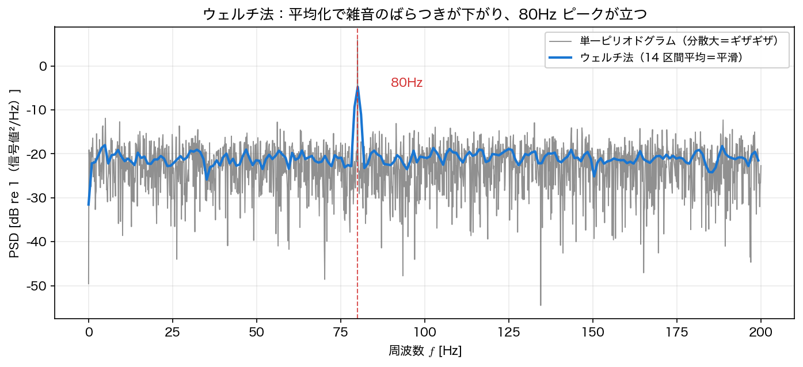

ピリオドグラムとウェルチ法
前ページでは決定的な（雑音のない）信号の漏れを扱った。本ページでは 雑音を含む 信号のスペクトルをどう見積もるかを考える。素朴な方法（ピリオドグラム）の弱点を確かめ、それを克服する ウェルチ法 を導入する。
ピリオドグラム
長さ \(N\) の信号の FFT からパワースペクトル密度を直接作ったものを ピリオドグラム（periodogram） と呼ぶ。
ここで \(\times 2\) は、前ページの片側 PSD 定義と同じく \(\pm f\) の 2 成分を片側にまとめるための補正である。\(k=0\)（直流）と、\(N\) が偶数のときの \(k=N/2\)（ナイキスト）だけは対になる負の周波数をもたないので \(2\) 倍しない。\(N\) が奇数ならナイキストのビンは存在せず、rfft の最終ビンも \(2\) 倍する。これは最も素朴な PSD 推定だが、重大な弱点がある。雑音に対して分散が大きく、信号長 \(N\) を増やしても減らない（統計学でいう不一致推定量）。点数を増やすと周波数の刻みは細かくなるが、各点のばらつきは大きいまま ── スペクトルは いつまでもギザギザ のままなのである。
雑音 \(\sigma=2\) に埋もれた振幅 \(1\)・\(80\) Hz の正弦波で確かめる。
import numpy as np
rng = np.random.default_rng(0)
fs, T = 1000.0, 8.0
N = int(fs * T)
t = np.arange(N) / fs
x = np.sin(2*np.pi*80*t) + 2.0 * rng.standard_normal(N) # SNR は低い
X = np.fft.rfft(x)
fr = np.fft.rfftfreq(N, 1/fs)
P = np.abs(X)**2 / (fs * N) # ピリオドグラム（両側）
P[1:-1] *= 2 # 片側 PSD へ補正（DC・ナイキストを除き2倍）
# 雑音帯（80Hz 近傍を除く 50–110Hz）のばらつきを変動係数で測る
band = (fr > 50) & (fr < 110) & (np.abs(fr - 80) > 3)
print(f"雑音帯の変動係数 CV = {P[band].std()/P[band].mean():.3f}")
変動係数（標準偏差/平均）が約 \(1\) ── つまり雑音フロアの推定値が平均と同じ程度に 暴れている。この中から \(80\) Hz のピークを自信をもって読み取るのは難しい。
ウェルチ法
解決策は素直で、たくさん測って平均する ことである。信号を複数の区間に分け、各区間にスペクトルを求めて 平均 すれば、雑音のばらつきがならされる。これを実用的な手順にまとめたのが ウェルチ法（Welch's method） である。
- 信号を長さ \(L\) の区間に分ける（ふつう 50% 重ねて 区間数を稼ぐ）
- 各区間に 窓関数（Hann 窓など）をかけてピリオドグラムを計算する
- 全区間のピリオドグラムを 平均 する
\(K\) 個の独立な区間を平均すると、推定の分散は約 \(1/K\) に下がる（ばらつきは \(1/\sqrt{K}\)）。scipy.signal.welch がこの手順を実装している。
import scipy.signal as ss
fr_w, P_w = ss.welch(x, fs=fs, window='hann', nperseg=1024) # 50%重複が既定
band_w = (fr_w > 50) & (fr_w < 110) & (np.abs(fr_w - 80) > 3)
print(f"Welch の変動係数 CV = {P_w[band_w].std()/P_w[band_w].mean():.3f}")
print(f"ピーク周波数 = {fr_w[P_w.argmax()]:.1f} Hz (真値 80Hz)")
変動係数が \(1.04\to 0.27\) へ下がった（分散にして約 \(15\) 倍の低減）。\(8\) s の信号を \(\text{nperseg}=1024\)（\(1.024\) s）で \(50\)% 重ねると \(K=14\) 区間とれるので、ばらつきは \(1/\sqrt{K}\approx 1/\sqrt{14}\approx 0.27\) とよく合う。雑音フロアが平らになり、\(80\) Hz のピークがはっきり立ち上がる。
重複した区間は独立ではない
\(1/K\)・\(1/\sqrt K\) は本来 独立な \(K\) 区間を平均したときの値である。\(50\)% 重ねた区間は同じサンプルを共有しているので独立ではなく、隣り合う区間のピリオドグラムには相関が残る。Hann 窓・\(50\)% 重複の場合、この相関係数は \(\rho=1/6\)（\(\rho^2\approx1/36\)）で、有効な平均数は
となり、予測される変動係数は \(1/\sqrt{13.3}\approx 0.274\) である。上の実測 \(0.268\) はこちらとよく合う。相関が小さいので \(1/\sqrt K\) でもよい近似だが、「重ねれば重ねるほど際限なく分散が下がる」わけではないことは押さえておきたい（\(50\)% 重複が定石なのは、独立性の損失に対して区間数の増加が最も割に合うからである）。
なお、ここで測っている「周波数方向のばらつき」は、本来知りたい「同じ実験を何度も繰り返したときの推定量のばらつき」の 代理指標 である。雑音フロアが周波数によらず平坦だからこそ、周波数方向の散らばりで代用できている。

分解能とのトレードオフ
ウェルチ法でばらつきを下げるには区間を多く（＝1区間を短く）したいが、区間が短いほど周波数の刻み \(\Delta f=f_s/L\) は 粗くなる。nperseg を大きくすると刻みは細かくなるが平均する区間数が減って ばらつきが増える。分解能 vs 分散 のトレードオフであり、近接した2周波数を分けたいか・雑音フロアを平らにしたいかで選ぶ。
厳密には \(\Delta f=f_s/L\) は FFT の ビン間隔 であって、2 つの周波数を分離できる限界そのものではない。実際に分離できるかは窓の 主ローブ幅 で決まり、Hann 窓なら主ローブの零点間幅は \(4\) ビン、等価雑音帯域幅（ENBW）は \(1.5\) ビンある。つまり Hann 窓では、\(2\) 本のピークを分けるのに \(\Delta f\) の数倍の間隔が要る。矩形窓は主ローブが狭い（\(2\) ビン）代わりに漏れが大きい ── ここでも前ページの「分解能 vs 漏れ」のトレードオフが効いている。
電力収支（パーセバルの定理）
PSD には「周波数について足し上げると平均電力になる」という重要な性質がある（第3回のパーセバルの離散版）。
ただしこの等号が 厳密に 成り立つのは、信号の全長を1区間として 矩形窓（窓なし）で、トレンド除去もせず に作ったピリオドグラムを、上のように ビンごとの和 で積分したときである。振幅 \(A\) の正弦波と分散 \(\sigma^2\) の白色雑音なら、平均電力は理論的に \(A^2/2+\sigma^2\) になる。
rng = np.random.default_rng(2)
fs, T = 1000.0, 20.0
N = int(fs * T); t = np.arange(N) / fs
A, f0, sigma = 1.0, 100.0, 0.5
x = A*np.sin(2*np.pi*f0*t) + sigma*rng.standard_normal(N)
# 厳密：全長・矩形窓・トレンド除去なしのピリオドグラムをビン和で積分
fr_p, P_p = ss.periodogram(x, fs=fs, window='boxcar', detrend=False)
print(f"ピリオドグラムのビン和 = {P_p.sum()*(fr_p[1]-fr_p[0]):.6f}")
print(f"平均電力 mean(x^2) = {np.mean(x**2):.6f}")
# Welch（窓＋区間平均）は同じ量の推定値。厳密には一致しない
fr, P = ss.welch(x, fs=fs, window='hann', nperseg=4096)
print(f"Welch のビン和 = {P.sum()*(fr[1]-fr[0]):.6f}")
print(f"理論 A^2/2+σ^2 = {A**2/2 + sigma**2:.6f}")
ピリオドグラムのビン和は標本平均電力と 12 桁一致 する。一方 Welch は同じ量の 推定値 なので、理論値 \(0.75\) のまわりで小数第3位程度ずれる。
Welch の積分値をそのまま電力と読まない
ss.welch は「窓をかけた短い区間のピリオドグラムを平均する」推定量なので、上の等式が厳密に成り立つとは限らない。とくに次の 2 点に注意する。
- 既定でトレンド除去が入る（
detrend='constant'：各区間の平均を引く）。したがって 直流成分は消える。実際x = np.ones(8192)に対して既定のwelchを積分すると \(0\) になり、mean(x**2) = 1と全く合わない。直流も勘定に入れたいならdetrend=Falseを明示する。 - 積分は台形則ではなくビン和で行う。台形則は両端のビンを半分しか数えないので過小評価になる。上の
x = np.ones(8192)（detrend=False）では、ビン和が \(1.0000\) と正しいのに対し、台形則は \(0.6667\) になる。
厳密な電力収支を確認したいときは、上のコードのように 全長・矩形窓・detrend=False のピリオドグラムをビン和 で評価すること。Welch はあくまで雑音フロアの形を安定して見るための推定量である。
信号と雑音を分けて見積もることもできる。白色雑音は全帯域に一様に広がるので、片側 PSD の 雑音フロア は \(\sigma^2/(f_s/2)=0.25/500=5\times10^{-4}\ \text{V}^2/\text{Hz}\)。ピーク近傍を積分すれば信号電力 \(A^2/2=0.5\) が得られ、両者の比から SNR
が読める。スペクトル解析は、こうして「どの周波数にどれだけの電力があるか」「信号は雑音に対してどれだけ強いか」を定量化する道具である。
scipy.signal.welch の使い方
f, Pxx = ss.welch(
x,
fs=1000, # サンプリング周波数 [Hz]
window='hann', # 窓関数（既定 'hann'）
nperseg=1024, # 1区間の長さ（分解能 Δf = fs/nperseg）
noverlap=None, # 重複（既定 nperseg//2 = 50%）
scaling='density', # 'density':PSD[V^2/Hz] / 'spectrum':パワー[V^2]
)
- 振幅スペクトル（正弦波のピーク振幅）を読みたいときは
scaling='spectrum'にして \(\sqrt{2\,P_{\text{peak}}}\)。 - 雑音フロアや電力の積分を見たいときは
scaling='density'（既定）。
\(\sqrt{2P_{\text{peak}}}\) が振幅になる条件
係数 \(2\) は「実正弦波の電力が \(\pm f\) に半分ずつ分かれる」ことの補正なので、対になる負周波数をもたない 直流とナイキストでは \(2\) を掛けない（そこでは \(\sqrt{P_{\text{peak}}}\)）。さらに、前ページのスキャロッピング損失は scaling='spectrum' でも同じように効くため、正弦波の周波数がビン中心に乗っていることが要る。\(f_s=1000\) Hz・nperseg=1000（\(\Delta f=1\) Hz）・Hann 窓で試すと、\(10.0\) Hz では \(\sqrt{2P_{\text{peak}}}=1.0000\) と真値を当てるが、半ビンずれた \(10.5\) Hz では \(0.8488\) にとどまる。
まとめ
- ピリオドグラム \(\lvert X\rvert^2/(f_s N)\) は素朴な PSD 推定だが、雑音に対し 分散が \(N\) で減らない（CV≈1 のギザギザ）。
- ウェルチ法：区間分割＋窓＋平均で分散を約 \(1/K\) に下げる（14 区間で CV \(1.04\to0.27\)）。代償は分解能 \(\Delta f=f_s/L\) の低下 ── 分解能 vs 分散 のトレードオフ。
- PSD は積分すると 平均電力 に等しい（パーセバル）。信号電力 \(A^2/2\)・雑音フロア \(\sigma^2/(f_s/2)\) から SNR が見積もれる。
- 実装は
scipy.signal.welch。scalingとnpersegを目的に応じて選ぶ。
本講義との接続
スペクトル解析は計測・信号処理の標準的な前処理になる。次ページでは、その応用として周波数領域での フィルタリング を扱う。本回までは「スペクトルが時間とともに変わらない（定常）」と仮定したが、時間変化する信号には 第9回 短時間フーリエ変換（STFT）とスペクトログラムが要り、分解能を周波数ごとに変えられるよう発展させたのが 第10回 ウェーブレット変換 である。PSD と電力の考え方は 特異値分解・動的モード分解（第13〜14回）でのモードのエネルギー評価にもつながる。